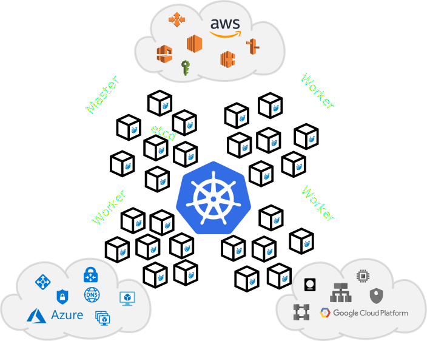

Kubernetes in 60 minutes

Adam Netočný
Michal Zerola
What is Kubernetes?
- Industry leading orchestration platform
- From Greek
- Means helmsman / ship‘s pilot
- Steers your ship full of containers
- Builds upon 15 years of experience at Google
- Open source (ASL 2.0), governed by CNCF

Containers
- Lightweight, stand-alone, executable package of a piece of software, e.g. web server or micro-service
- Includes everything needed to run it: code, runtime, system tools, system libraries, settings, etc.
- Software will always run the same, regardless of the environment
- Isolate software from its surroundings
- Similar isolation to VMs, but more light-weight
Main features
"Changes the way developers think..."
Cost benefits
Architecture
Architecture
Interacting with Kubernetes
Deployments
apiVersion: apps/v1
kind: Deployment
metadata:
name: api-deployment
labels:
app: marginestimator
spec:
replicas: 2
selector:
matchLabels:
app: marginestimator
template:
metadata:
labels:
app: marginestimator
spec:
containers:
- name: marginestimator-api
image: dbg/me-api:1.7.9
ports:
- name: auth-proxy
image: oauth2-proxy:2.2.1
ports:
- containerPort: 443

Services
Service load-balances Pods in a Deployment- Maps Pod ports to a service ports
- Provide stable IP address or DNS name

Auto scaling
Add a new pod if deployment CPU utilization is more then 50%.
apiVersion: autoscaling/v2beta1
kind: HorizontalPodAutoscaler
metadata:
name: nginx
namespace: default
spec:
scaleTargetRef:
apiVersion: apps/v1
kind: Deployment
name: nginx
minReplicas: 1
maxReplicas: 10
metrics:
- type: Resource
resource:
name: cpu
targetAverageUtilization: 50
Real example - Margin Estimator
- Calculates margins for any portfolio
- Cloud-native application
- Microservice architecture
- Reactive Java / Go / Angular 5